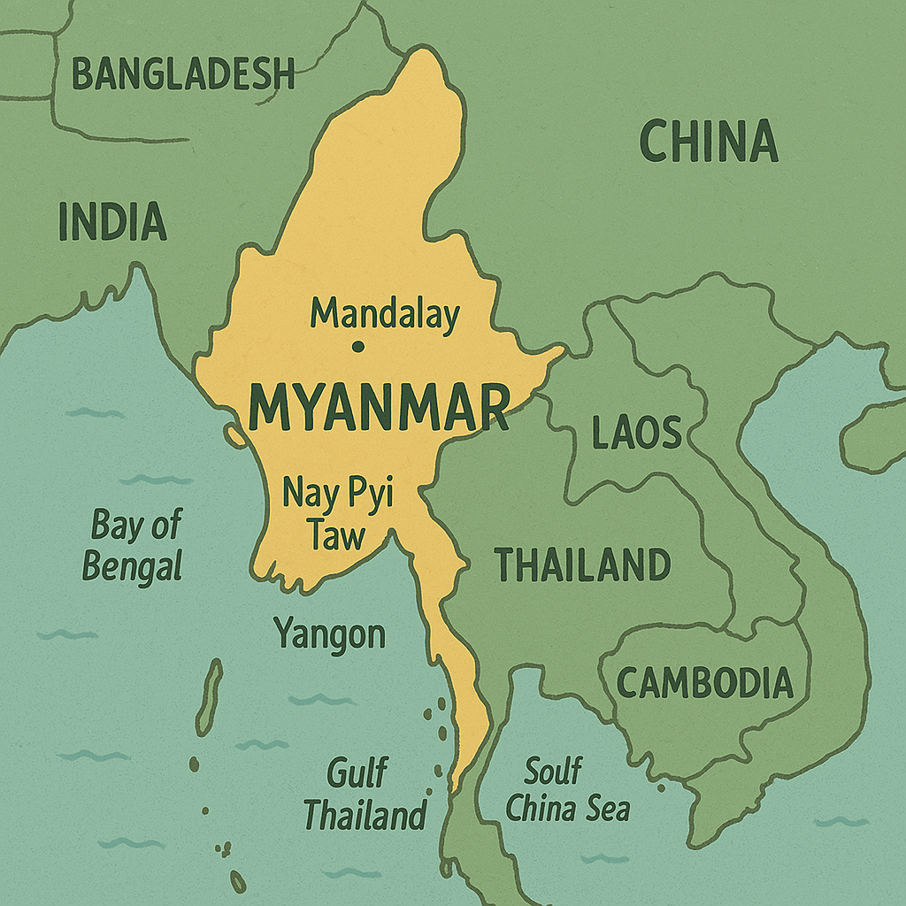
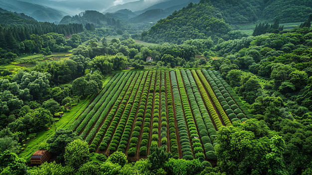

Delicious foods can be only made with delicious ingredients. The land of Myanmar is bountiful with delicious ingredients from its prosperous agriculture products.
Colorful cultural backgrounds is the foundation of colorful and tasty foods.
People of Myanmar who are filled with sharing spirit make foods with love.
Geography and History

Geography and foods
As Myanmar is bordered with countries Thailand, China and India, cuisines are influenced by those neighbor countries. Similar curry styles with India and Chinese Mala taste foods are examples of trading food cultural of Myanmar with neighbor countries. Fishes from streams and giant lobsters from the Ocean, fruits from the Mountains and vegetables from the plain are foundational ingredients of Myanmar Cuisines.
135 groups of ethic in Myanmar with different languages and cultural backgrounds use different but similar technique to make foods. This makes Myanmar cuisines to be various.
Myanmar's Agriculture

Agriculture and foods
Beautiful yellow rice fields along Chindwin, Ayeyarwaddy and Thanlwin rivers are evidences of the flourished rice plantation in Myanmar. It is also saying that rice is the soul food for Myanmar People. Bountiful tea plantation built the tradition serving tea salad with hot green tea to visitors to homes. Whatever one is desired to plant on the land, Myanmar land will give the most decilious fruit back. It is the reason that different types of vegetables together with fermented fish sauce are daily side dishes.